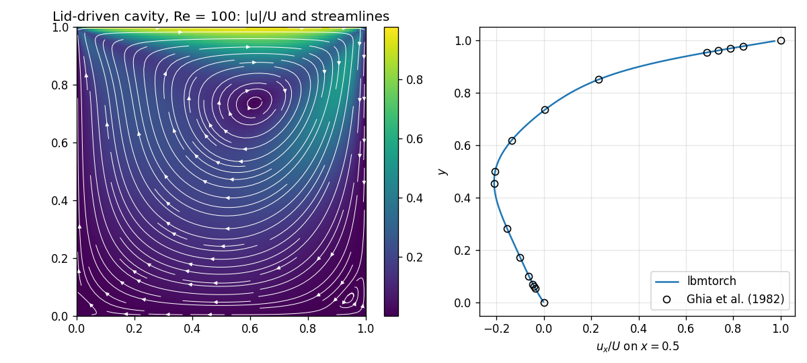
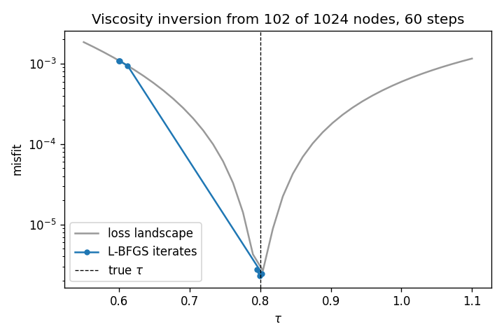
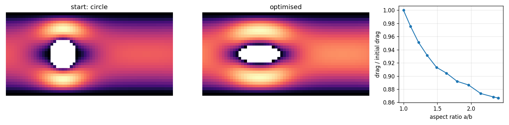
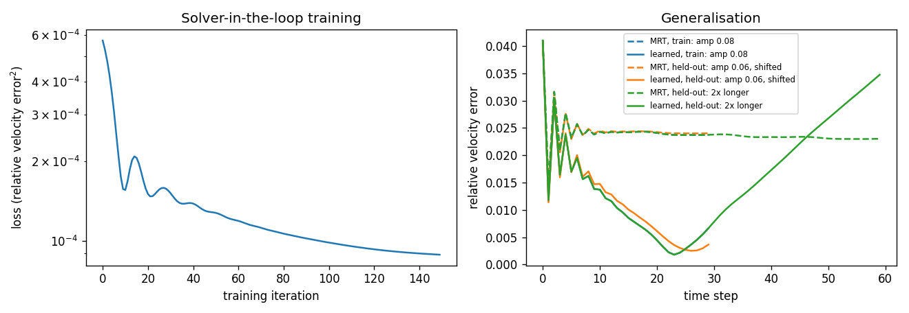

A differentiable lattice Boltzmann solver for inverse problems and learned physics
A 2D lattice Boltzmann flow solver written in PyTorch, where every operation in the time loop is a tensor operation. Automatic differentiation therefore gives exact gradients of any output with respect to viscosity, forcing, initial state or wall shape, through the whole time loop. I validated the solver against analytic and published benchmarks, then used those gradients for three tasks: recovering an unknown viscosity from sparse data, reshaping an obstacle for lower drag, and training a neural collision operator with the solver in the loop.
Correct first
The solver implements the D2Q9 lattice with BGK, TRT, MRT and Smagorinsky collision models, Guo body forcing, bounce-back walls (including second-order Bouzidi walls for curved boundaries), Zou–He inlets and outlets, and the hydrodynamic force on bodies. Each feature ships with a test against an analytic solution or a published benchmark, with a stated tolerance: Poiseuille flow, Taylor–Green decay with second-order convergence, the lid-driven cavity against Ghia et al. (1982), and the Schäfer–Turek cylinder benchmark.

Making a time-stepping solver differentiable
Autograd only works if nothing in the time loop breaks the graph. A few rules make that hold:
- No in-place writes. Boundary conditions build their result with
torch.whereandtorch.stackinstead of overwriting entries. - Solid nodes keep finite values. A NaN in a branch that
torch.wherediscards still poisons the gradient. - Curved walls come from a level set, so the wall position is a continuous tensor rather than a set of cells, and gradients reach the geometry.
- Gradient checkpointing stores only every k-th state and recomputes the rest during the backward pass, so memory grows with the number of checkpoints, not the number of steps.
Every differentiable path is checked against finite differences with torch.autograd.gradcheck
in double precision.
Recovering viscosity from sparse data
A Taylor–Green vortex decays with an unknown viscosity. The velocity is observed once, after 60 steps, at 10% of the nodes, with 0.5% noise. Gradients of the misfit come from backpropagating through all 60 steps, and L-BFGS recovers the relaxation time to better than 10−3. The relaxation time is stored as 1/2 + softplus(θ), so no optimiser step can leave the stable region.

Shape optimisation through the wall geometry
An obstacle in a channel is described by an ellipse level set with its area held fixed. The drag comes from the momentum exchanged at the wall, and its gradient reaches the aspect ratio through the second-order wall model. Gradient descent lengthens the body along the flow and cuts drag by 13%. No adjoint solver had to be written: here the adjoint is autograd.

Learning a collision operator with the solver in the loop
The collision step is a local map, so a neural network can correct it. The model keeps standard MRT and adds a small MLP correction that only touches moments the physics leaves free, so mass and momentum are conserved exactly whatever the weights are. The last layer starts at zero, so the untrained model is exactly MRT. Training unrolls 30 solver steps on a coarse Taylor–Green flow, compares with the analytic solution and backpropagates through the whole trajectory.

| Model | error at 30 steps | 60 steps | 120 steps |
|---|---|---|---|
| MRT | 2.40e-2 | 2.35e-2 | 2.28e-2 |
| learned, 30-step horizon | 3.66e-3 | 2.46e-2 | 4.68e-2 |
| learned, 60-step horizon | 1.23e-2 | 8.09e-3 | 2.72e-2 |
How it is built
- Small, typed interfaces: a collision model or a boundary condition is any function with the
right signature, and learned models are ordinary
torch.nn.Modules. - One code path on every device: the same tensor code runs on CPU, CUDA and Apple MPS, in single or double precision.
- Validation as tests: pytest runs the analytic and benchmark checks and the gradient checks on every change.